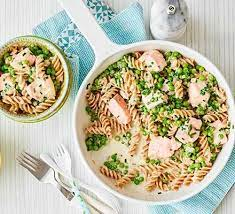

Pasta with Salmon & Peas

Description
Make this salmon pasta in under 20 minutes for a dinner the whole family can enjoy.
Kids will love the fun-shaped pasta while packing in fibre and omega-3.
Ingredients
- 240g wholewheat fusilli
- knob of butter
- 1 large shallot, finely chopped
- 140g frozen peas
- 2 skinless salmon fillets, cut into chunks
- 140g low-fat crème fraîche
- ½ low-salt vegetable stock cube
- small bunch of chives, snipped
Steps
- Bring a pan of water to the boil and cook the fusilli according to the pack instructions.
- Meanwhile, heat a knob of butter in a saucepan, then add the shallot and cook for 5 mins or until softened.
- Add the peas, salmon, crème fraîche and 50ml water. Crumble in the stock cube.
- Cook for 3-4 mins until cooked through, stir in the chives and some black pepper. Then stir through to coat the pasta. Serve in bowls.